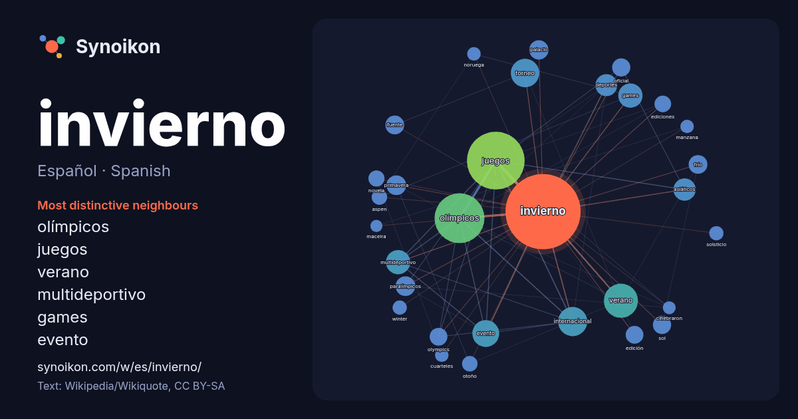

Español · Spanish · word of the day list
invierno
“winter” · The words found around it in 880 instances from Spanish Wikipedia, Wikiquote.

Most distinctive neighbours
- olímpicos 99×
- juegos 73×
- verano 46×
- multideportivo 33×
- games 32×
- evento 26×
- torneo 25×
- asiáticos 24×
- paralímpicos 21×
- deportes 20×
- internacional 20×
- primavera 19×
- frío 18×
- olympics 18×
- palacio 15×
- sol 14×
- aspen 14×
- ediciones 14×
- otoño 13×
- fuente 12×
× = how many times more often than in general Spanish Wikipedia text.
Most frequent neighbours
- juegos 181
- olímpicos 135
- verano 63
- internacional 46
- torneo 44
- evento 39
- games 32
- multideportivo 32
- asiáticos 27
- deportes 26
- paralímpicos 21
- primavera 21
- palacio 20
- frío 19
- fuente 19
- oficial 18
- sol 18
- edición 17
- olympics 17
- ediciones 15
In context
- vocablo «verano» para referirse a la estación seca, e «invierno» para la estación lluviosa. El invierno, se caracteriza por ser una estación templada, es Wikipedia snippets · Invierno
- juegos de verano e invierno se celebrarían en años diferentes. Desde la edición de Lillehammer en 1994 los juegos de verano y de invierno se celebran con Wikipedia snippets · Juegos Olímpicos de Invierno
- astronómicamente, puede señalar ya sea el comienzo o la mitad del invierno del hemisferio. La palabra invierno tiene un significado subjetivo, puesto que no tiene un Wikipedia snippets · Solsticio de invierno
- Los deportes de invierno o actividades de invierno son deportes competitivos o actividades recreativas no competitivas que se practican sobre nieve o hielo Wikipedia snippets · Deporte de invierno
- Invierno un evento multideportivo cuatrienal para atletas con discapacidades físicas, mentales y sensoriales, que se dedican a deportes de invierno, Wikipedia snippets · Juegos Paralímpicos de Invierno
- Invierno o El invierno puede referirse a: Invierno, una de las estaciones del año; Invierno demográfico, denominación, acuñada por los científicos sociales Wikipedia snippets · Invierno (desambiguación)
- permiten la circulación con neumáticos M+S en invierno, al considerar que sólo son neumáticos de invierno genuínos los que llevan el símbolo 3PMSF. Es Wikipedia snippets · Neumáticos de invierno
- Diocesana[2] Wikimedia Commons alberga una categoría multimedia sobre Santa María del Invierno. Datos: Q1641378 Multimedia: Santa María del Invierno / Q1641378 Wikipedia snippets · Santa María del Invierno
More Spanish words
- agua
- arte
- bosque
- caballo
- camino
- campana
- canción
- ciencia
- ciudad
- clima
- comida
- corazón
- desierto
- dinero
- dios
- espejo
- estrella
- familia
- fuerza
- gato
- historia
- isla
- jardín
- lengua
- lluvia
- madre
- mapa
- miel
- montaña
- muerte
- naturaleza
- oro
- otoño
- pan
- perro
- puente
- reloj
- sal
- salud
- silencio
- sombra
- tiempo
- tormenta
- trabajo
- tren
- té
- verano
- verdad
- vida
Precomputed on 2026-10-09 with default settings (±5 words, medium corpus). The interactive map can refresh it with live data.